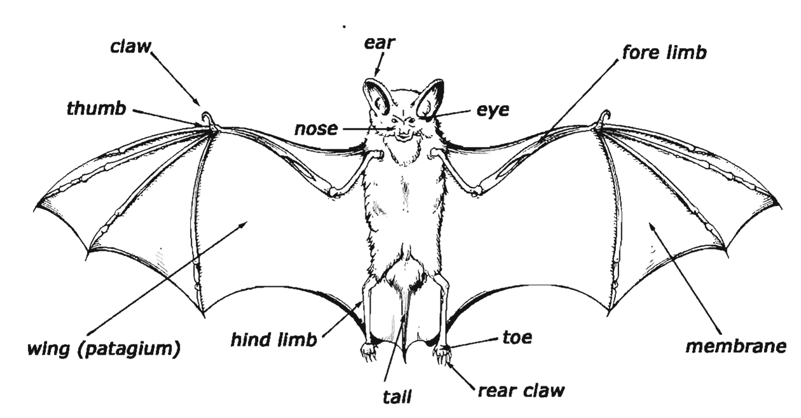

Pre-listening
You are going to hear a conversation between Chi Wen, a student from Hong Kong who is studying in Australia, and her homestay host Mrs Smith.
Which household chores do you think Chi Wen will have to do?
Listen and write A, B or C — Track 13
Track 13 — Chi Wen and Mrs Smith
Context listening — household chores
Listen and write A if Mrs Smith will do this, B if Chi Wen will do this, or C if both of them will do it.
Listen again and fill in the gaps
Track 13 — Chi Wen and Mrs Smith (again)
Context listening — fill in the gaps
Listen again and fill in the gaps.
Put the words into four groups
Put the words you wrote in Exercise 3 into four groups.
B1 — Personal and possessive pronouns
| Subject | Object | Possessive | |
|---|---|---|---|
| singular | I, you, he, she, it | me, you, him, her, it | mine, yours, his, hers |
| plural | we, you, they | us, you, them | ours, yours, theirs |
- We use subject pronouns before verbs: I can introduce you to my friend, Yi Ling. She's a student from Taiwan. (not
Yi Ling's a student) - We use object pronouns after verbs or prepositions: I only arrived last month. → I have had a lot of students staying with me over the years.
- We use possessive pronouns to replace a possessive determiner and a noun: I don't have a phone here. Can I use yours? (= your phone)
B2 — Reflexive pronouns
Reflexive pronouns: myself, yourself, himself, herself, itself, ourselves, yourselves, themselves
We use reflexive pronouns:
- when the subject and the object of the verb are the same: You can prepare yourself a packed lunch if you like.
- to add emphasis to the subject or object: I clean the kitchen and the living areas myself. (= I do it, not anybody else)
- with by to mean on my own/on your own etc.: I clean the kitchen and the living areas by myself. (= on my own)
- after some set expressions in the imperative with yourself/yourselves: Help yourself. Look after yourself (= be careful). Enjoy yourselves.
B3 — Some special situations
It
We can use it:
- as a subject to start a sentence without carrying any meaning — often about the weather, the time or distance: It didn't always rain. It's five o'clock. It's 10 km from the sea.
- to start sentences when the real subject is an infinitive or an -ing form: It won't take long to settle in. (= to settle in won't take long)
- to refer to phrases, whole sentences or ideas: I only arrived last month and I am still finding it all a bit strange, actually. (= living in a foreign country)
You and we
To talk about everybody in general we can use:
- you: In Australia you often eat sandwiches for lunch. (= people in Australia)
- we (when we include ourselves in the group): We often eat lunch in a bit of a hurry. (= Australian people in general, and the speaker is Australian)
They
We can use they:
- to mean experts or authorities: They have changed the law recently. (= the government) They have discovered a new kind of beetle. (= scientists)
- when we do not know or do not need to say if the person is male or female: I asked a student if they liked learning English and they said no!
One/ones
We can use one/ones to avoid repetition of a countable noun:
- I do have a few rules. The most important one is that I want everyone to feel at home. (= the most important rule)
Fill in the gaps with it, its, itself, they, their or themselves
Fill in the gaps with it, its, itself, they, their or themselves.

The bat has claws on thumbs and sometimes on the toes of fore and hind limbs. The rear claws enable to hang on to a tree branch or ledge.
All bats are active at night or at twilight, so eyes are poorly developed. Instead use nose and ears to orientate .
Find and correct 13 places where nouns could be replaced with pronouns
Find and correct 13 places where nouns could be replaced with the pronouns in the box to make the email sound more natural.
Dear Liz
I'm sorry I haven't emailed you for a while. I'm really busy with my studies at the moment. My course is going well and I'm enjoying my course a lot. The trouble is that my course takes up all my time. How is your course going?
I hope you will be able to visit me soon. I'd like you to meet my friends. My best friend here is Paul. Paul lives in the flat next to my flat , and I usually eat most of my meals with Paul . At the moment I'm doing most of the cooking though, because Paul had an accident last week. One of the reasons for the accident is connected to some changes at the university recently. The university authorities have decided that students shouldn't be allowed to bring cars up to the campus, so more and more of the students are cycling. Because of this new rule, Paul was riding his bicycle to the university. While he was cycling along a car driver drove into the back of his bike. The car driver didn't stop and check if Paul was okay. Luckily Paul was not badly hurt and managed to pick up his bike and get to the doctor's surgery. The doctor said his finger was probably broken and strapped his finger up, so he can't hold anything in his right hand at the moment and Paul can't really cook for Paul .
Anyway, he'd like to meet you, so we must arrange a time for you to come here.
Get in touch soon.
Love, Sandy
Fill in the gaps with a suitable pronoun or there
Fill in the gaps with a suitable pronoun or there.
Student: Well, I think that are a lot of different factors to take into consideration. For example, some countries want to show the rest of the world that are successful and can do this with a space exploration programme. seems that is more important for these countries to impress the world than to look after their own people. Sometimes is difficult to understand this because every country in the world has problems and has poor people that need to be looked after because they can't look after . So, yes, I do think that these countries should look after people first before start trying to send men to the moon! are too many other problems here on earth that we need to sort out.
Underline the correct words
Underline the correct words.
Write about the following topic
You should spend about 40 minutes on this task.
Write about the following topic:
Governments spend millions of dollars each year on their space programmes. Most recently, Mars is the focus of scientists' attention. Some people think this money would be better spent on dealing with problems closer to home.
Do you agree or disagree?
Give reasons for your answer and include any relevant examples from your own knowledge or experience.
You should write at least 250 words.
Model answer
In the past, different countries used space exploration to compete with each other. For example, the United States and the USSR raced each other to see who could put a man on the moon first. It would have been much easier and cheaper if they had pooled resources and information, and made a joint expedition into space. Fortunately, nowadays this is happening more and more, and thus less money overall is being wasted.
Nevertheless, some critics believe that all money given to space exploration is wasted. They argue that if the millions of dollars spent on space research were put into health and education programmes around the world, many lives would be significantly improved. If this money were used to support crop development in different parts of the world, we could save many more lives in countries where people do not have enough food. It is very difficult to argue against these criticisms.
In my opinion, we need a balance between how much money is spent on space exploration and how much money is invested into solving problems here on earth. With continued co-operation between nations over space travel more will be achieved for less money. This should leave more money to be spent on problems at home.
… For example, the United States and the USSR raced each other to see who could put a man on the moon first. 2 It would have been much easier and cheaper if 3 they had pooled resources and information, and made a joint expedition into space …
… 4 It is very difficult to argue against these criticisms …
… In my opinion, 5 we need a balance between how much money is spent on space exploration and how much money is invested into solving problems here on earth. With continued co-operation between nations over space travel more will be achieved for less money. This should leave more money to be spent on problems at home …